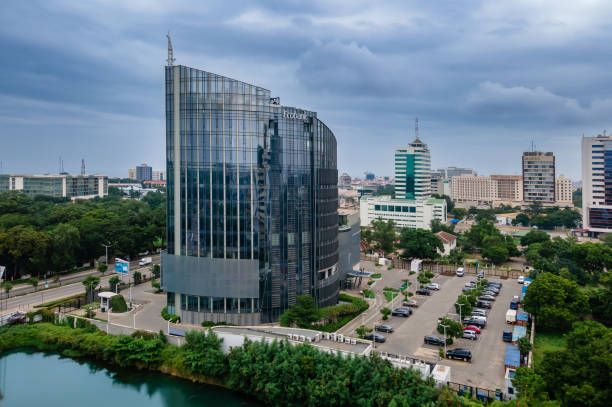
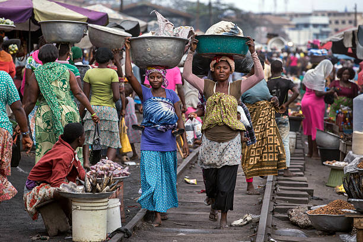
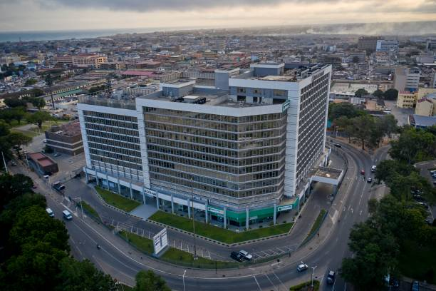
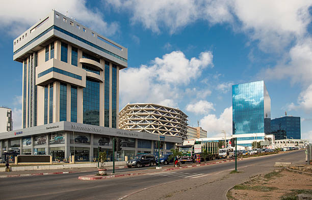
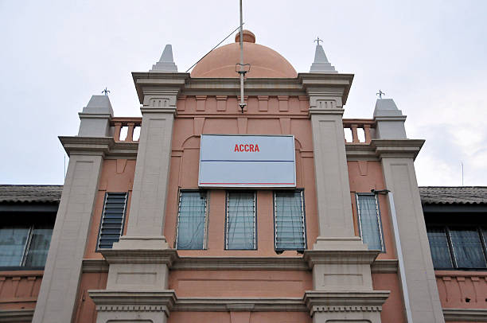

Our Mission
Our mission is to provide an engaging and informative platform for exploring the rich culture, history, and landmarks of Accra. We aim to inspire both locals and tourists to discover the hidden gems of this vibrant city.
History of Accra
Accra, the capital city of Ghana, has a rich history that dates back to the 15th century. It has evolved from a small trading post to a bustling metropolis, blending modernity with tradition. The city's history is reflected in its architecture, culture, and vibrant communities.


Accra Simply Beautiful

Accra City Center

Airport Residential
Accra Ridge
